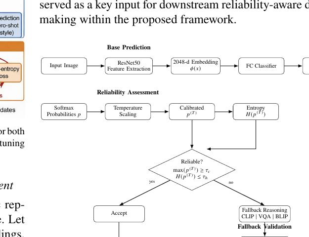
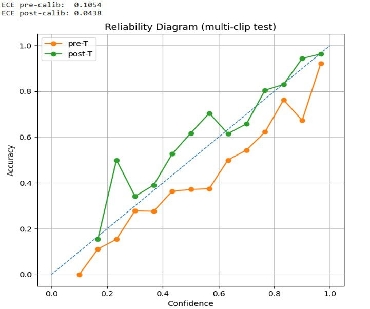
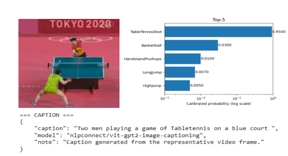
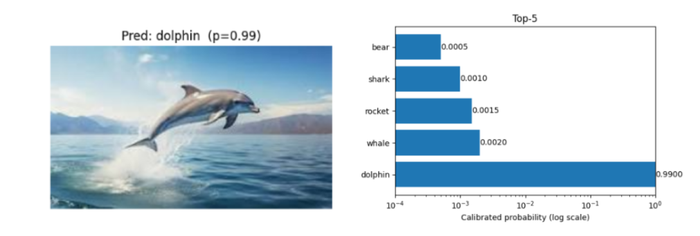

Shared Embeddings
Align visual and semantic information in a common latent space.
A reliability-aware multimodal framework that combines semantic alignment, confidence calibration, uncertainty estimation, and cross-modal fallback validation so predictions are not only accurate, but easier to trust.
Shared embeddings make it possible to reason across text, images, audio, and video, but prediction confidence is often derived from uncalibrated softmax scores. A model may therefore report high certainty even when the prediction is incorrect, ambiguous, or supported by weak cross-modal evidence.
Overconfidence creates misleading certainty in decision-critical settings.
Prior multimodal research largely improved shared representation quality, while calibration, uncertainty, and selective prediction were often treated as separate problems. The proposed work unifies these reliability mechanisms inside the inference pipeline.
Align visual and semantic information in a common latent space.
Transform raw softmax scores into probabilities that better reflect correctness.
Use predictive entropy to identify ambiguous or diffuse predictions.
Re-check low-confidence predictions with additional cross-modal evidence.
The framework combines a base visual prediction with calibration and entropy-based uncertainty. Reliable outputs are accepted; uncertain outputs are routed through cross-modal validation before a final decision is produced.
Image or video content
ResNet50 / modality features
Classifier + softmax logits
Temperature scaling
Entropy estimation
Confidence + entropy thresholds
CLIP · VQA · BLIP
Validated decision

Temperature scaling softens overconfident probability distributions without changing the original class ranking. Entropy adds a second reliability signal by measuring how concentrated or diffuse the calibrated prediction distribution is.
Systematic overconfidence: predicted confidence exceeds observed accuracy.
Confidence becomes much better aligned with empirical correctness.
Reduction in Expected Calibration Error.

Low entropy corresponds to concentrated, confident predictions. High entropy identifies ambiguous cases where confidence alone may be insufficient.
A low-confidence prediction can activate auxiliary cross-modal reasoning instead of being accepted directly. The paper illustrates a predefined threshold such as 0.60; the fixed threshold is also explicitly identified as a limitation and future opportunity.
Checks semantic class agreement.
Verifies semantic correctness through reasoning.
Generates descriptive language for additional cross-modal validation.
The experiments cover image and video tasks, using temperature scaling for calibration and CLIP/BLIP-based fallback components to test reliability under uncertainty.
Processed with a ResNet backbone for image classification experiments.
Processed using an R3D-18 3D CNN for temporal action recognition.
Zero-shot classification and image captioning support cross-modal verification.
Expected Calibration Error, reliability diagrams, confidence consistency, entropy, and accuracy.


Reliability curves move closer to the ideal confidence-accuracy diagonal.
Entropy helps distinguish sharp confident predictions from diffuse uncertain ones.
Low-confidence predictions can be re-checked using complementary multimodal evidence.
Decision-critical multimodal systems need more than strong embeddings and high accuracy. They need confidence estimates that reflect correctness, explicit uncertainty signals, and a mechanism for validating weak predictions.
Semantic representations can vary with LLM prompt design.
A manually chosen threshold does not adapt to input complexity or modality-specific uncertainty.
A single calibration parameter may be insufficient under heterogeneous multimodal uncertainty or distribution shift.
CLIP, BLIP, and VQA add latency and can propagate errors because the components are not jointly optimized.